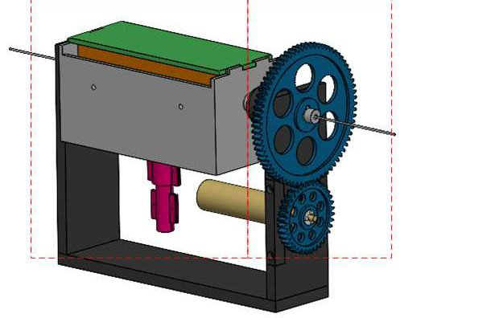

Academic bedside robots · ujn_cao2024
UJN catheter drive
University of Jinan compact continuous-delivery catheter drive with friction wheels in a disposable surgical box and a constant-force clamp

1 / 6


- Family
- Academic bedside robots (academic)
- Devices
- one catheter (Sec. II); tests with a catheter (Figs. 13-14)
- Degrees of freedom
- 2 (axial feed, circumferential rotation) (Sec. II)
- Push
- Friction rollers
- Twist
- Rotating drive unit
- Tested up to
- Bench
- Sim-to-real
- None found — No simulation-trained controller found for this robot.
Testing
- Highest level
- Bench
- What was tested
- bench: 10 axial moves of 100 mm measured with a vernier caliper and 10 rotations of 60 deg measured with a protractor on the experimental platform (Sec. V, Figs. 12-14); no phantom. Alekseeva 2025 Table 9 lists it as TRL3 (ex vivo phantom).
- Key numbers
- axial error -0.65 to +0.62 mm per 100 mm move; rotation error -2 to +2 deg per 60 deg (Sec. V); calculated: 19.72 mm per feed-motor turn, max feed speed 3845.39 mm/s, 0.05 rad per rotation-motor turn, max rotation speed printed as 6.42 rad/s in Eq. 11 and 6.24 rad/s in the text (Sec. IV); friction wheel radius 14.5 mm; feed motor 11,700 rpm with reducer 4.62; rotation motor 7,600 rpm with reducer 62.01 and gear ratio 2:1 (Sec. IV)
Mechanism
- Push (translation)
- friction-roller: two active and two driven grooved friction wheels in a disposable box, the active ones driven through three gear shafts by one motor; the box couples to the power unit by a triangular-prism shaft (Sec. II-A1, II-B, Figs. 2, 4, 7)
- Twist (rotation)
- gear pair rotates the whole axial-feed unit, the feed motor rides along, wires through a conductive slip ring (Sec. II-A2, Fig. 3)
- Device range
- N.R. (constant-force clamp adjustable by spring pre-compression, Sec. II-B, III)
- Target anatomy
- N.R. (general vascular intervention; coronary, brain, liver and kidney lesions named in the introduction)
Sensing and interface
- Force sensing
- none (a sawtooth constant-force clamp caps the clamping force mechanically, Sec. II-B, III)
- Leader and haptics
- a "master manipulator" box stands on the bench in the platform photo (Fig. 12); its design is N.R.; the tests were run from upper-computer software (Sec. V)
- Imaging
- N.R.
- Sterility
- disposable surgical box holds every part that touches the catheter; reusable power unit below (Sec. II-B, Fig. 5)
Size
- Footprint (mm)
- N.R.
- Mass (kg)
- N.R.
Simulation
- Simulation model
- none found
- Sim-trained controller
- none found
Versions
- Lineage
- single version (cao2024_cathdrive, IDITR 2024); Alekseeva 2025 Table 10 lists a design by the same authors (W. Wang et al. 2024, clamping bracket block) as TRL2 concept, not catalogued
Sources
- Design of Catheter Drive Mechanism for Vascular Interventional Surgery Robot · 2024 3rd International Conference on Innovations and Development of Information Technologies and Robotics (IDITR), 2024 · doi:10.1109/IDITR62018.2024.10554319 [cao2024_cathdrive]
- The Design of Endovascular Robots for Cardiac Interventions: A Survey · Journal of Field Robotics, 2024 · doi:10.1002/rob.22480 [alekseeva2025_design]
Notes
- Notes
- N2 2026-11-08, from review_comparison §1.2 row 26. Main picture is CAD: the only prototype photo (Fig. 12, platform) shows the drive about 200 px wide inside a red box; that photo is gallery picture 01. Alekseeva Fig. 12(a,b) draws the generic roller principle only.
This record
- Read level
- full — full (cao2024_cathdrive); review-only (alekseeva2025_design Table 9 row 5)
- Picture
- cao2024_cathdrive Fig. 1 overall CAD diagram, p. 2 ↗ — licence: publisher copyright (IEEE); grade C
- Picture changes
- native extract; cropped off the label row and leader lines (box 0,84,620,480); two dashed red group boxes remain across the model; not upscaled
- Found by
- gap: Gap searches for robots the other searches missed.
- Data
- JSON · YAML:
records/robots/ujn_cao2024.yaml - Correction
- Suggest a correction [repository not created yet]